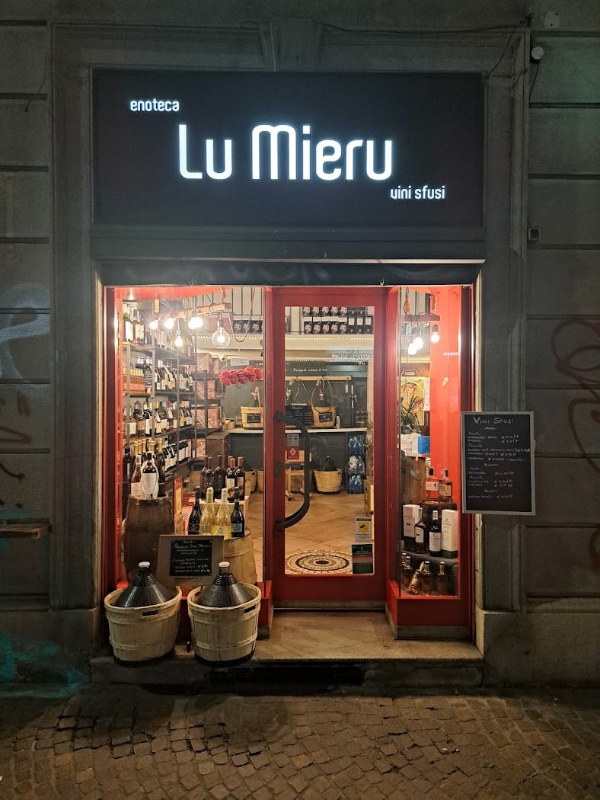
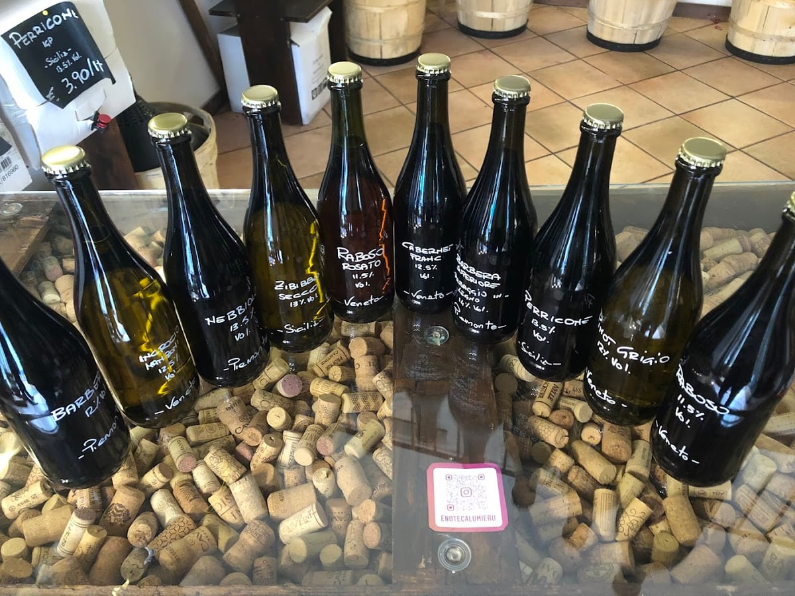

Vino sfuso
La nostra firma: vino di qualità al litro. Porta il vuoto o te ne diamo uno noi.
Enoteca · vini sfusi · NoLo, Milano
Il vino, quello vero.
In dialetto salentino «lu mieru» è il vino. E qui il vino è di casa: sfuso e in bottiglia, buono e a prezzo onesto, con Giuseppe pronto a consigliarti la bottiglia giusta. Una piccola enoteca di quartiere, come una volta.

Via Venini 52
01L'enoteca
Lu Mieru è la piccola enoteca di Via Venini, nel cuore di NoLo. La specialità è il vino sfuso — buono, genuino, con il prezzo al litro — ma sugli scaffali trovi anche una selezione in bottiglia curata, dai classici alle chicche dei piccoli produttori.
Il segreto è il titolare: Giuseppe, «oltre che un amico, davvero in gamba», come scrivono i clienti. Gentile, preparato, sempre pronto a farti assaggiare qualcosa di nuovo e a trovarti il vino giusto — al giusto prezzo.
02Cosa trovi
La nostra firma: vino di qualità al litro. Porta il vuoto o te ne diamo uno noi.
Una selezione curata, dai grandi classici alle etichette che ci piace far scoprire.
Vini naturali e di cantine di territorio, scelti uno a uno, spesso da assaggiare.
Dicci cosa cucini o che serata hai in mente: Giuseppe ti trova la bottiglia giusta.
Prezzi onesti, sempre. Passa in negozio: il bello è farsi consigliare.
03Dove & orari
| Lunedì | Chiuso |
|---|---|
| Martedì | 10–13 · 15:30–19:30 |
| Mercoledì | 10–13 · 15:30–19:30 |
| Giovedì | 10–13 · 15:30–19:30 |
| Venerdì | 10–13 · 15:30–19:30 |
| Sabato | 10–13 · 15:30–19:30 |
| Domenica | Chiuso |
Via G. e C. Venini 52, 20127 Milano · 342 515 1529
La mappa è di Google: aprendola, Google riceve il tuo indirizzo IP e può usare i suoi cookie.
04Recensioni
“Il titolare Giuseppe, oltre che un amico, è davvero molto in gamba. Andate da lui per un ottimo vino: non ve ne pentirete.”
Simone · Google
“Vini buoni e prezzi onesti, sia sfuso che in bottiglia. Una sicurezza.”
Enrico · Local Guide
“Molto gentili, con un buon assortimento di vini da acquistare sfusi. Interessante anche la selezione in bottiglia. Decisamente consigliabile.”
Ambrogio · Local Guide
“Ottimi vini, ottimi prezzi e titolare simpatico.”
Google
“Buon vino e tanta simpatia.”
Google
05Contatti
Cerchi una bottiglia per una cena o vuoi riempire la damigiana? Scrivici su WhatsApp o chiama: Giuseppe ti aspetta in Via Venini.
Sì, è la nostra specialità: vino sfuso di qualità, con il prezzo al litro. Puoi portare il tuo contenitore (il vuoto) oppure te ne forniamo uno. Accanto trovi anche una bella selezione in bottiglia.
Vini buoni a prezzi onesti, sfusi e in bottiglia, con una selezione dai classici alle etichette di piccoli produttori. Giuseppe è sempre pronto a consigliarti l'abbinamento giusto.
In Via Giulio e Corrado Venini 52, a NoLo. Aperti da martedì a sabato 10–13 e 15:30–19:30. Lunedì e domenica chiuso.
In dialetto salentino «lu mieru» vuol dire semplicemente «il vino». Un nome che dice già tutto.